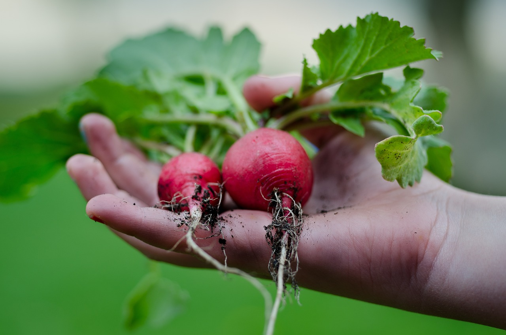

공유숲
이곳은 식물을 사랑하는 모든 분들을 위한 커뮤니티입니다.경험을 공유하고 소통하며 식물을 키우는 즐거움을 함께 나눠보세요.

안녕하세요~ 여러분 주말 잘 지내셨나요~? 저는 아이들과 함께 주말농장에 갔다 왔어요. 오늘은 열심히 딸기 모종을 심었답니다~뿌듯하네요.ㅎㅎ
2512
55 mins

정원이 허전한 것 같아서 흰 튤립을 심어봤어요. 흰 튤립은 향기롭거나 색이 화려한 꽃은 아니지만 매력이 있는 것 같아요. 꽃이 오래 펴있으면 좋겠네요.
1452
53 mins

저번에 파종한 래디쉬 드디어 수확했어요! 쨍한 핑크빛으로 이쁘게 잘 자랐어요. 피클로 담가먹고 샐러드도 해먹을 거예요. 기대되네요!
1003
50 mins
요즘에 저는 테라리움에 빠졌습니다~ 책상 위 작은 자연이랍니다~! 집에 유리 어항이나 작은 유리병 있으면 한번 만들어 보세요.
994
47 mins
거베라가 참 이쁘죠? 화병에 간단히 꽂아만 놨는데 집안 분위기가 사랑스럽게 변해요ㅎㅎㅎ 요즘 절화 꽃이 비싼데 텅장 되겠어요~
515
36 mins
식집사가 되고 나서 가장 좋은 점 중 하나는 요리할 때 허브를 살 필요가 없다는 거에요ㅋㅋ 그냥 옆에 있는 로즈마리 꺾어다가 닭 요리에 투척!!
512
25 mins

잡초 뽑기 삼매경! 어찌나 생명력이 강하던지!! 잡초는 뽑아도 뽑아도 끝이 없어요...! 그렇지만 제 소중한 정원을 위해 열심히 해야죠..
502
5 mins